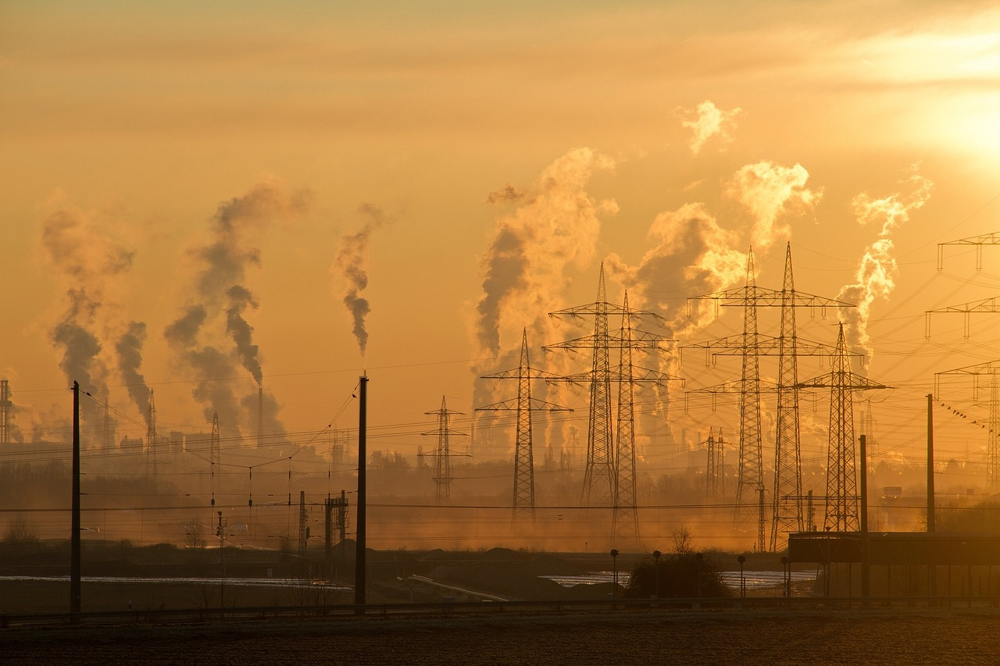

Tres formas de contribuir desde hoy
La lucha contra el cambio climático requiere acción colectiva. A través de pequeños pasos cotidianos se construye un impacto real.
Educación global
Organiza campañas de conciencia y comparte información verificada. La educación ambiental es el primer paso hacia el cambio de comportamientos a escala.
Mejora tu entorno
Planta árboles, crea jardines urbanos y apoya proyectos de reforestación y conservación en tu comunidad local.
Transporte sostenible
Camina, utiliza bicicleta o transporte público. Cada desplazamiento en coche evitado reduce tu huella de carbono de forma significativa.

Es momento de actuar
Cada día nuestras acciones impactan el planeta. Las industrias, el transporte y los hábitos de consumo continúan emitiendo gases de efecto invernadero. El tiempo para tomar decisiones es ahora.
Conocer más sobre el cambio climático